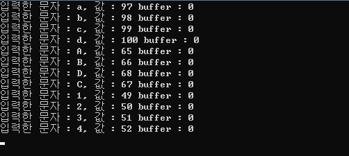
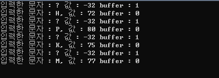
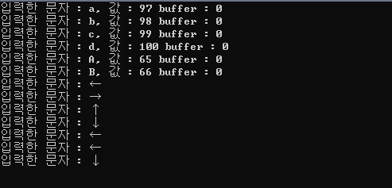

[C언어] 실시간 키보드입력 받기 kbhit()함수
1. include conio.h
우리는 C언어에서 사용자로부터 키보드 입력을 받기 위해 scanf() 함수를 사용합니다. 하지만 scanf()는 값을 입력한 후 줄바꿈 문자(엔터키)를 입력해줘야 입력이 됩니다.
게임에서 캐릭터를 움직일 때 방향키를 누를 때마다 엔터키를 일일이 줄바꿈 문자(엔터키)를 누르진 않잖아요? 그래서 실시간으로 키보드의 누른 값을 입력해주는 함수가 필요합니다. getch()은 입력받은 문자 하나를 아스키코드로 반환해주는 함수입니다. getch()는 stdio.h 헤더 파일에 포함되어있습니다.
하지만 우리가 키보드를 입력하는 방향키는 아스키코드에 존재하지 않습니다. 방향키는 2바이트 확장키로 구성되어있습니다. 이를 출력해주기 위해서는 getch()를 두번 호출하여 입력을 두번 입력을 받도록 하겠습니다.
그런데 화면을 실시간으로 업데이트 하고 있는 상황일 때 getch()함수를 실행시키면 무한 대기에 빠집니다. 이를 해결하기 위해서는 키보드가 입력중일 때만 입력을 받아야 합니다. 다행히 C언어에 제공해주는 기본적인 헤더 파일 중 하나인 conio.h에서 kbhit()를 사용할 수 있습니다.
kbhit()함수는 현재 키보드가 누른 상태이면 1을 반환하고 그렇지 않으면 0을 반환합니다.
이제 getch()와 kbhit()를 사용하여 while문 도중 입력할 시 입력된 문자를 출력하는 함수를 만들어 보도록 하겠습니다.
2. 입력한 문자를 출력하는 getkey()함수 만들기
- #include <stdio.h>
- #include <conio.h>
- char getkey()
- {
- if(kbhit()==1) return getch();
- else return '\0';
- }
- int main()
- {
- char key;
- while(1)
- {
- key=kbhit();
- while(key==1)
- {
- key=getkey();
- printf("입력한 문자 : %c, 값 : %d buffer : %d\n", key, key, kbhit());
- }
- }
- }
키가 눌린 상태에서만 입력을 받기 위해 key=kbhit()를 받아서 1인 경우에만 getch()를 실행하도록 했습니다.
실시간으로 키보드를 입력받는 것을 확인하기 위해 while문 안에서 계속 반복하도록 했습니다.

실시간으로 키보드에서 입력된 값의 아스키코드와 문자값을 확인할 수 있습니다. 입력된 문자는 모두 1바이트이기 때문에 buffer는 0입니다.

이번에는 방향키 ↑↓←→를 순서대로 입력했습니다. 위에서도 언급했듯이 방향키는 2바이트 문자로 구성되어 있어서 문자 하나만 받은 경우에는 문자 하나가 더 입력되있는 것을 확인할 수 있습니다. 또한 아스키코드값에는 -32이 없기 때문에 문자가 ?로 출력된 것을 알 수 있습니다.
하지만 방향키의 마지막 문자는 다른 문자와 겹치기 때문에 구분할 필요가 있습니다. 방향키에 첫번째 문자의 아스키코드값이 -32이기 때문에 첫번째 아스키코드값이 -32인 문자만 구별하면 방향키의 입력을 구분할 수 있습니다.
3. 방향키를 구분하는 함수
- #include <stdio.h>
- #include <conio.h>
- char getkey()
- {
- if(kbhit()==1) return getch();
- else return '\0';
- }
- int main()
- {
- char key;
- while(1)
- {
- key=kbhit();
- while(key==1)
- {
- key=getkey();
- if(key == -32)
- {
- key=getkey();
- switch(key)
- {
- case 75: printf("입력한 문자 : ←\n"); break;
- case 77: printf("입력한 문자 : →\n"); break;
- case 72: printf("입력한 문자 : ↑\n"); break;
- case 80: printf("입력한 문자 : ↓\n"); break;
- default: break;
- }
- }
- else printf("입력한 문자 : %c, 값 : %d buffer : %d\n", key, key, kbhit());
- }
- }
- }
이제 방향키를 입력해보도록 합시다.

방향키를 잘 인식하는 것을 확인할 수 있습니다.
이를 활용해서 다음 글에서는 간단한 게임을 만들어 보도록 하겠습니다.